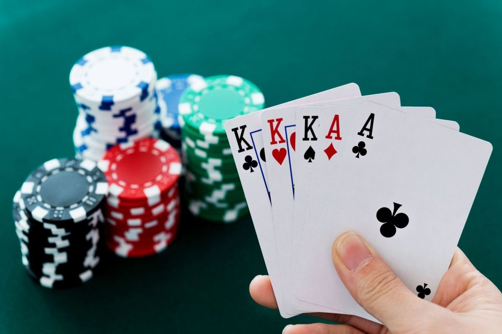

L'origine du poker est debatu mais on considere que le jeu la "primero" comme la mere du poker
Le mot poker vien de l'Allemand pochen qui signifie frapper. Pochen pourrait etre un version ancienne du poker puisque ses regles se resamble beaucoup a les regles du poker moderne

les grands tournois du poker sont World series of poker, World poker tour et l'EPT